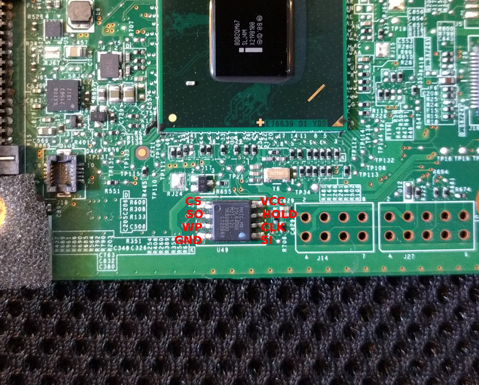

Lenovo T420
Flashing instructions
The flash IC is located at the bottom center of the mainboard. Sadly, access to the IC is blocked by the magnesum frame, so you need to disassemble the entire laptop and remove the mainboard.
Below is a picture of IC on the mainboard, with the pinouts labeled.

The chip will either be a Macronix MX25L6404E (shown above) or a Winbond W25Q64CVSIG. Do not rely on dots painted in the corner of the chip (such as the blue dot pictured) to orient the pins!
For more details have a look at T420 / T520 / X220 / T420s / W520 common and the general flashing tutorial.
Steps to access the flash IC are described here T4xx series.
Working
CPU: Sandy Bridge i5-2520M, i7-2670QM
RAM module combinations of 2G+0, 2G+2G, 4G+0
mSATA
USB
Video (Intel integrated)
Sound (integrated speakers, integrated mic, external headphones, external mic)
LAN
Mini-PCIe slots (WLAN)
Bluetooth
Linux
Windows 10 (through SeaBIOS as payload, using a VGA BIOS)
DVD-ROM drive
SD card slot
TrackPoint
Touchpad
Webcam
Fn hotkeys (backlight control, thinklight)
Thinklight
Mute button (Speaker only)
Mini Jack audio (headphones)
Suspend (Linux)
Not tested
DSub (VGA) out
DisplayPort out
eSATA
ExpressCard
WWAN
Not working/TODOs
Mutemic button doesn’t mute
Suspend (Windows 10)